تيار الكهرباء الخارجية أوضح.
مراجعة شاملة لثيم THRA في الرئيسية والصفحات والقوائم ونوافذ التفاصيل: أزرار مستديرة، تركيز واضح، وقراءة أسهل. تبقى الطاقة بمعلومات OCTA على خلفية THRA الدافئة السادة، والموسيقى على سطح OCTA الداكن المقصود.
افتح المعاينة التفاعليةR6 · 19 نوفمبر 2026 · بيانات توضيحية معزولةهذه نسخة عرض تجريبية لا تتصل بمعدات الكرفان. جميع اللقطات الرئيسية أدناه من التطبيق المجمّع نفسه على مقاس 1024 × 640، وتبقى علامة DEMO ظاهرة. نشر المعاينة لا يعني تثبيت تحديث على شاشة أندرويد.
تيار الكهرباء الخارجية · KWS
تفتح صفحات الشمسية والمولد والسجل من الأيقونة أو الرقم أو الفراغ بينهما أو اسم القسم؛ تبقى قراءة KWS معلومة للعرض وإيقاف الأحمال غير متاح في وضع الأجهزة غير المربوطة.
تظهر قراءة الأمبير من عداد KWS المعتمد عند توفر قراءة موثوقة وحديثة. عند الانقطاع أو قدم القراءة تظهر —؛ لا تتحول قراءة الأمبير إلى قدرة للإنفيرتر أو نسبة لشحن البطارية، ولا تفعّل أسهم تدفق غير موثقة.
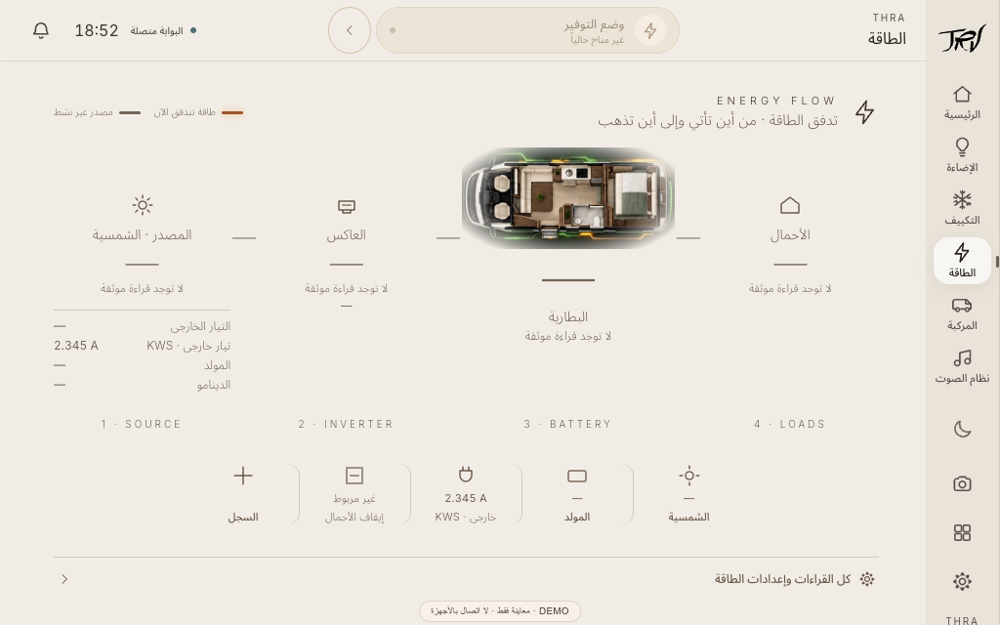
العربية · اختبار عرض معزول2.345 A بيانات مصطنعة، ليست قراءة الجهاز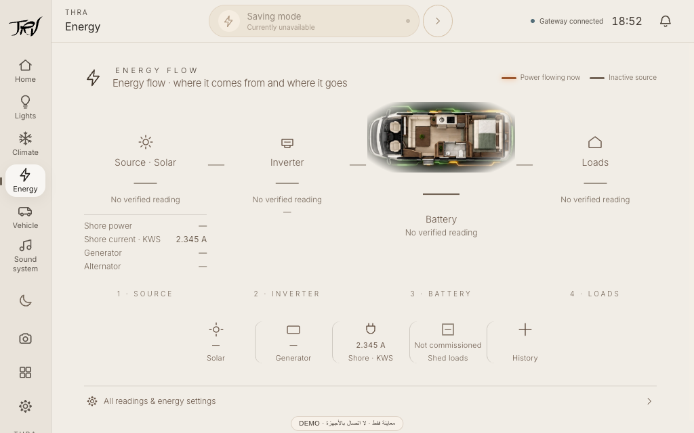
English · isolated display test2.345 A synthetic data, not a device readingصور اختبار القراءة أعلاه من بيانات مصطنعة داخل المتصفح فقط. تبدأ المعاينة العامة بمحاكاة منفصلة؛ لا تتصل بعداد حقيقي ولا تغيّر أي إعداد في الكرفان.
وضع التوفير · أخضر عند تأكيد التفعيل
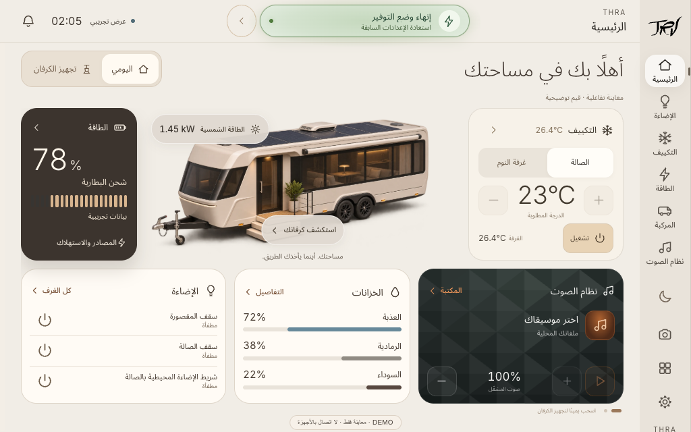
لا يظهر وهج النجاح أثناء الانتظار أو عند عدم جاهزية الربط. الاستعادة صريحة، وتحترم الواجهة إعداد تقليل الحركة.
الصفحات والتفاصيل
اضغط أي لقطة لفتح الصفحة الحالية في المعاينة.
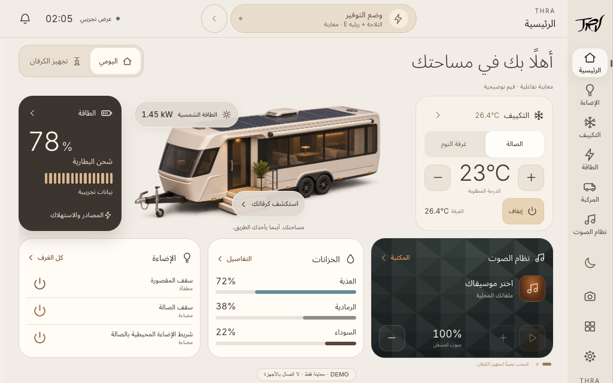
الرئيسية اليوميةافتح الصفحة ←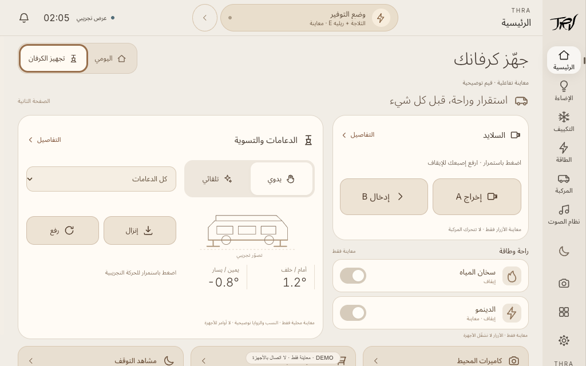
تجهيز الكرفانافتح الصفحة ←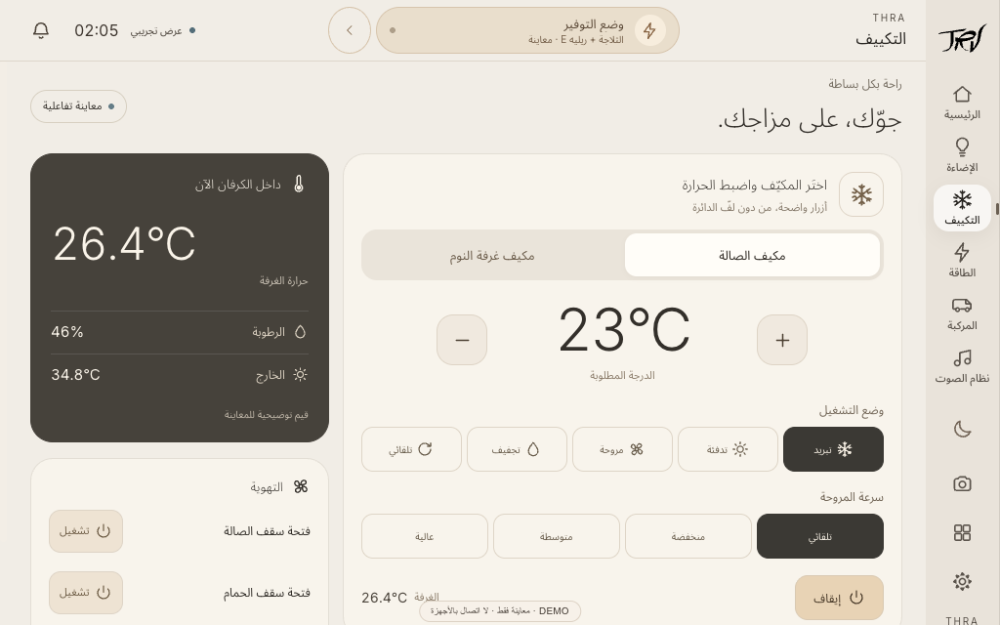
التكييفافتح الصفحة ←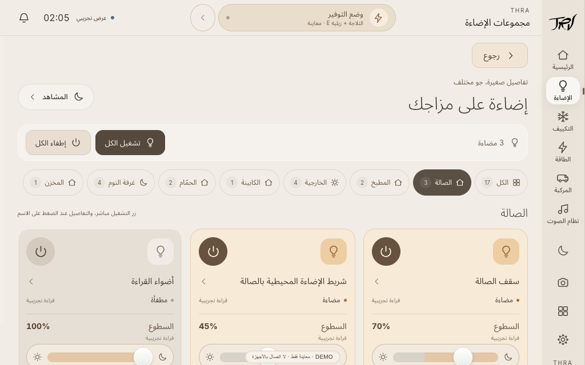
الإضاءةافتح الصفحة ←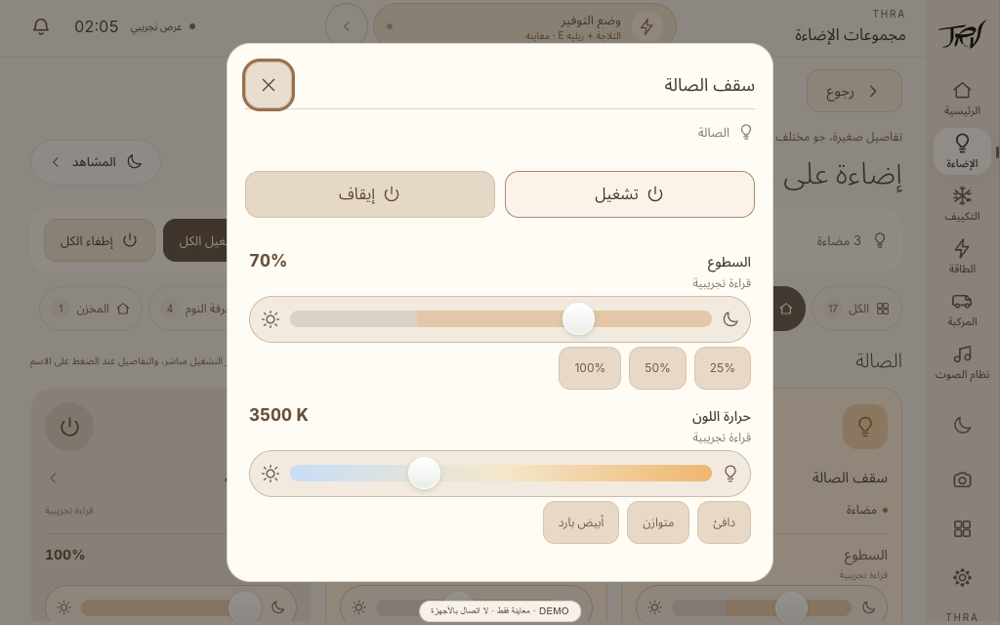
تفاصيل الإضاءةافتح الإضاءة ←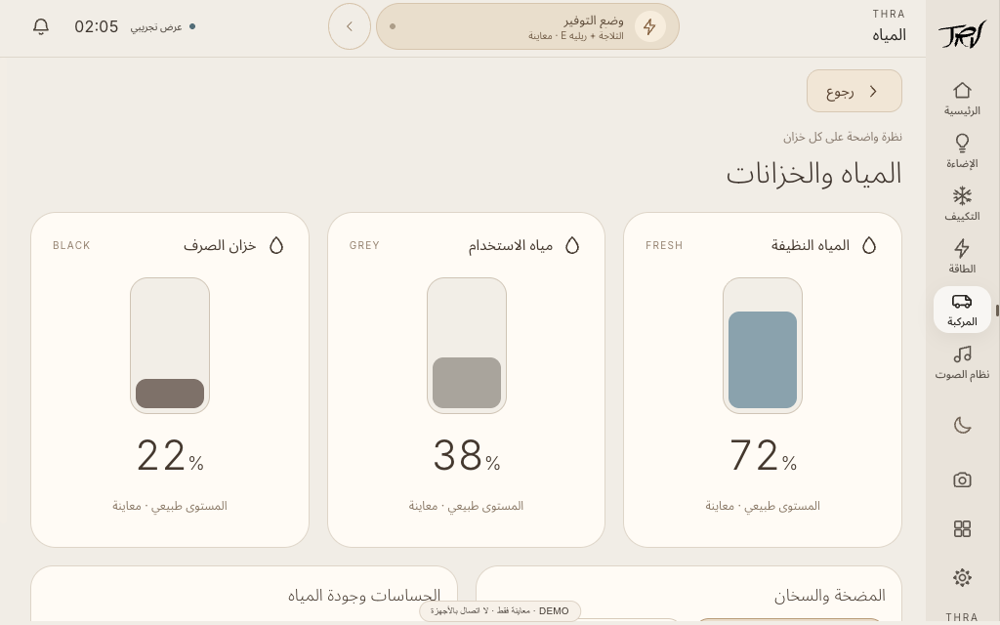
المياه والخزاناتافتح الصفحة ←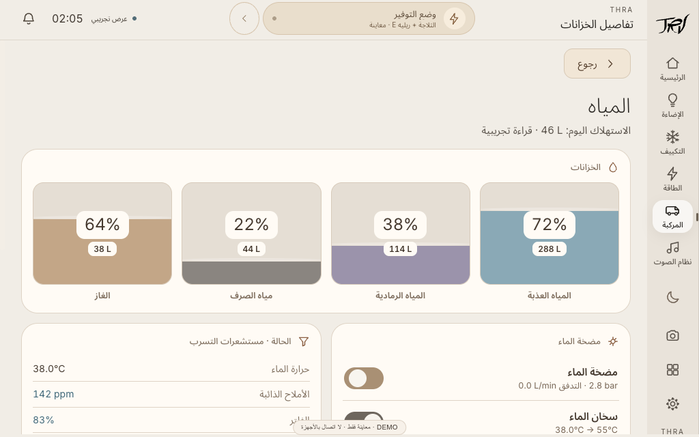
تفاصيل المياهافتح الصفحة ←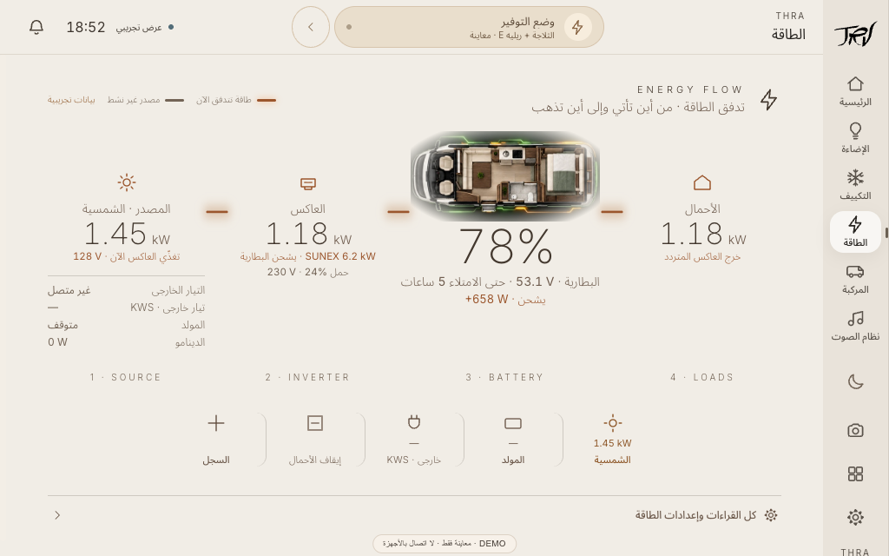
الطاقةافتح الصفحة ←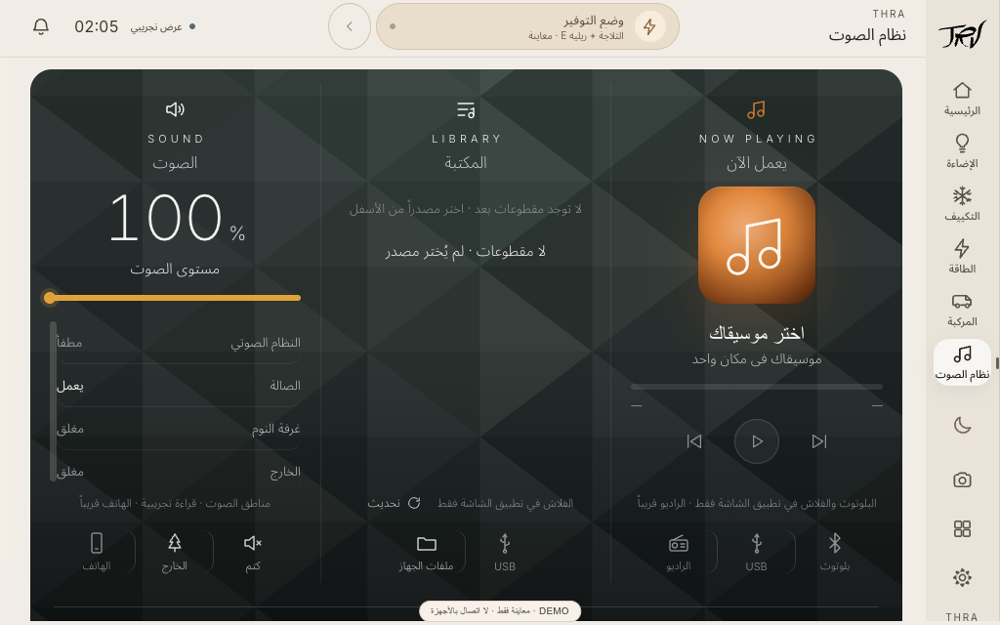
نظام الصوتافتح الصفحة ←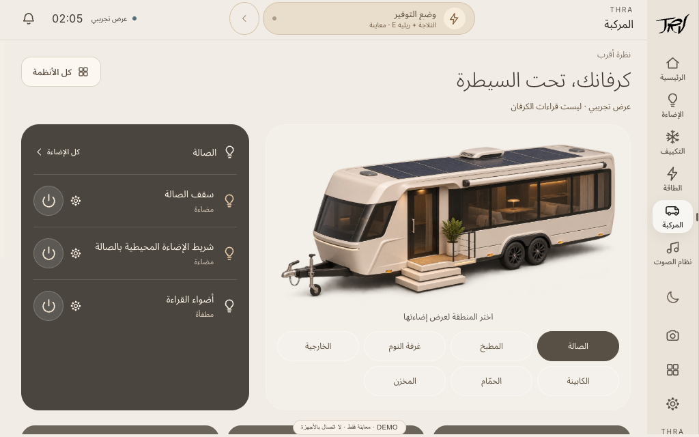
المركبةافتح الصفحة ←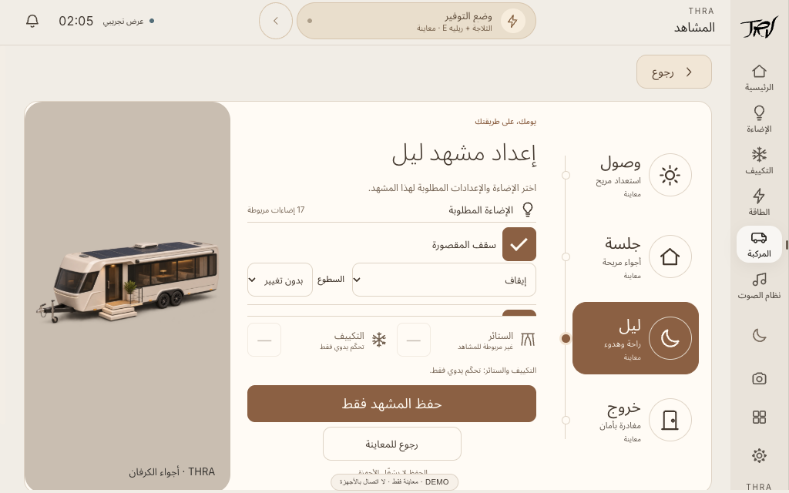
المشاهدافتح الصفحة ←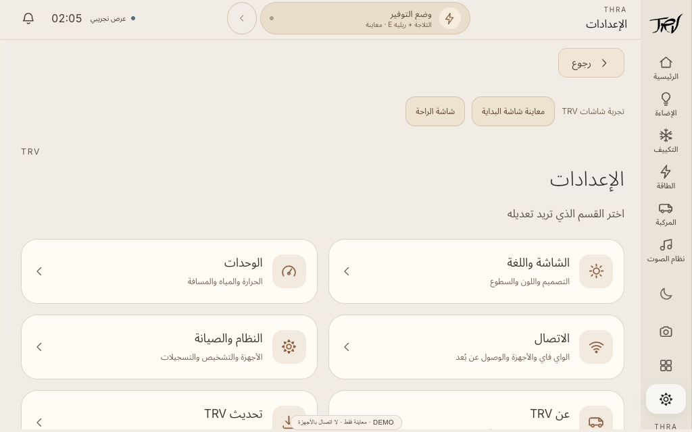
الإعداداتافتح الصفحة ←الإعدادات على المقاسات الصغيرة
هوية البداية وشاشة الراحة


زر الهلال يفتح شاشة الراحة. المس الشاشة للعودة؛ لمسة الخروج لا تمر إلى التحكمات خلفها.